火山、深い森、滝、海を一度に楽しむ旅。
鹿児島空港でレンタカーを受け取り、霧島神宮から鹿児島市へ。桜島を眺めた後は大隅半島の雄川の滝、最終日は指宿方面の知林ヶ島を巡ります。観光地をしっかり組み込みつつ、各所で休憩を取りやすい流れです。
桜島と錦江湾、霧島の森、雄川の滝、知林ヶ島へ。黒豚、黒牛、鹿児島ラーメン、白熊も楽しむ2泊3日です。
鹿児島空港でレンタカーを受け取り、霧島神宮から鹿児島市へ。桜島を眺めた後は大隅半島の雄川の滝、最終日は指宿方面の知林ヶ島を巡ります。観光地をしっかり組み込みつつ、各所で休憩を取りやすい流れです。
鹿児島を象徴する桜島から、霧島の社、滝、海へと景色の変化を楽しみます。
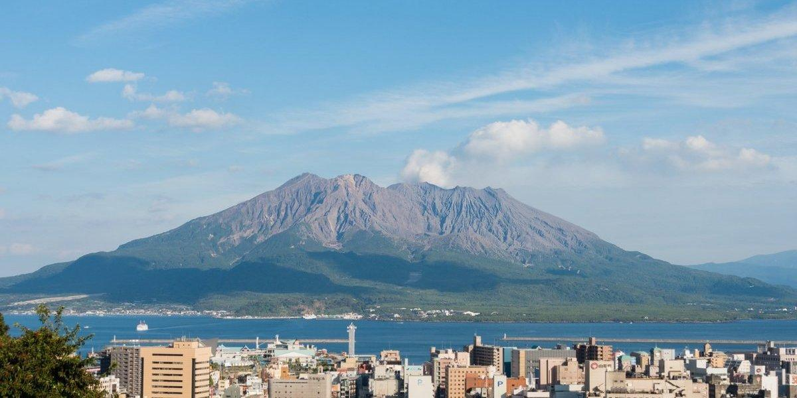
錦江湾越しに望む鹿児島の象徴。フェリーや展望スポットから雄大な火山景観を楽しみます。
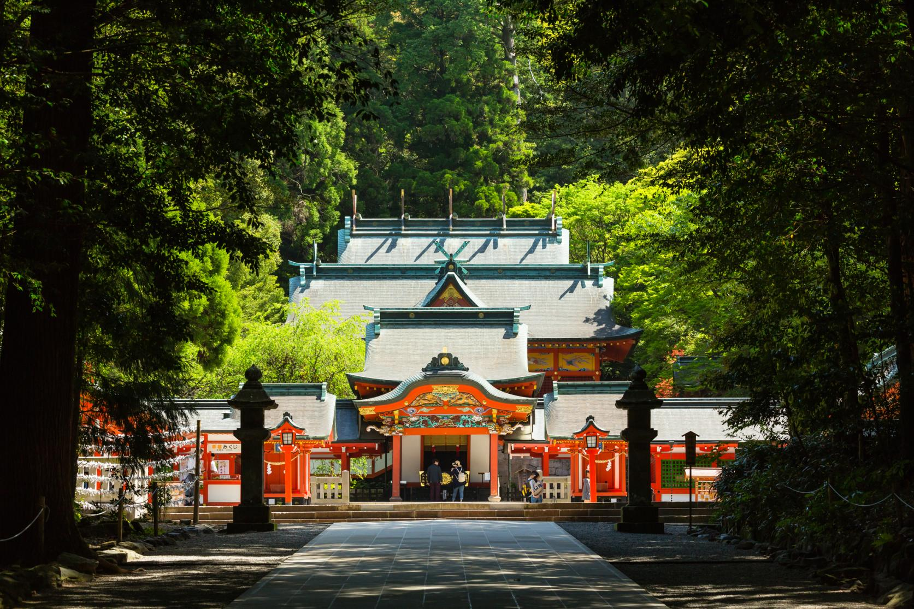
深い森の中に朱塗りの社殿が映える名所。空港から向かいやすく、旅の最初の立ち寄り先にします。
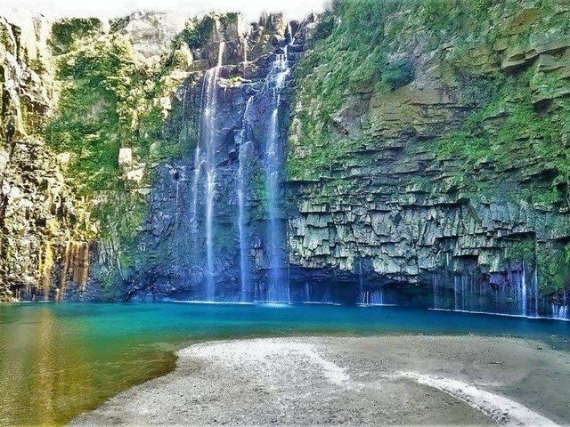
柱状節理の岩壁と青緑色の滝壺が印象的な秘境景観。時間に余裕を持って訪れます。
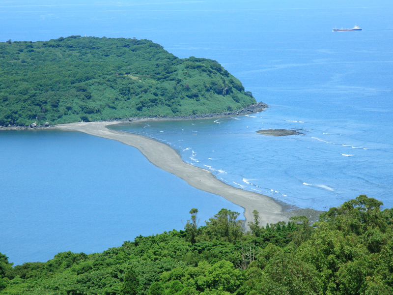
条件が合うと砂の道が現れ、島へ続く不思議な海景色を眺められます。指宿方面の締めくくりに組み込みます。
黒豚とんかつ、鹿児島黒牛、鹿児島ラーメン、白熊に加え、きびなご刺し、鶏飯、じゃんぼ餅、鶏刺しなど、鹿児島ならではの味覚を満喫します。
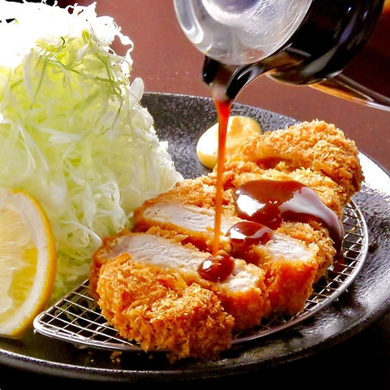
やわらかな肉質と脂の甘みを、揚げたてのとんかつで味わう鹿児島の定番です。
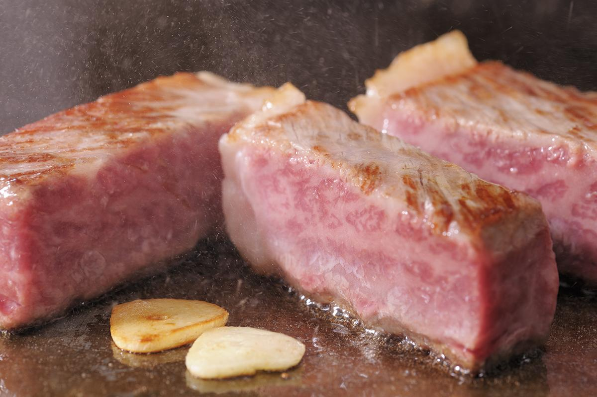
きめ細かな肉質と豊かな旨みを、ステーキや鉄板焼きで楽しみます。旅のごちそう候補です。
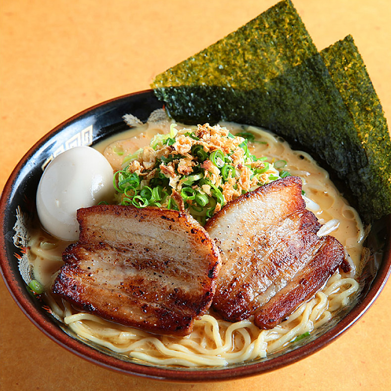
豚骨を軸に店ごとの個性があるご当地麺。市内観光の昼食や締めの一杯に組み込みます。
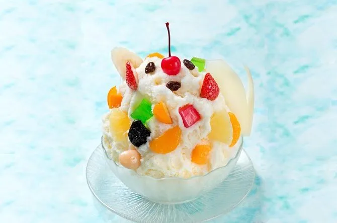
練乳をかけた氷に果物や豆を飾る華やかな名物。鹿児島市内で休憩を兼ねて楽しみます。
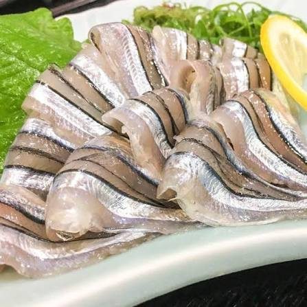
新鮮なきびなごを酢味噌で味わう、鹿児島を代表する郷土料理です。
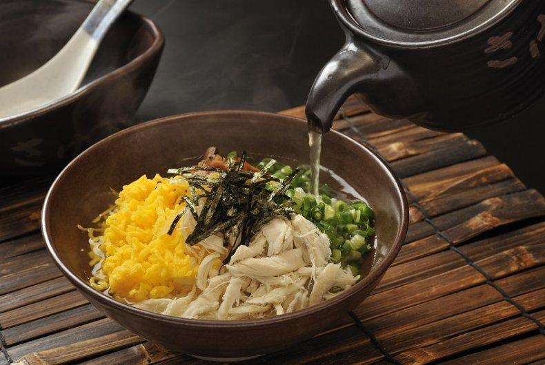
奄美大島の郷土料理。鶏だしをかけていただく優しい味わいです。
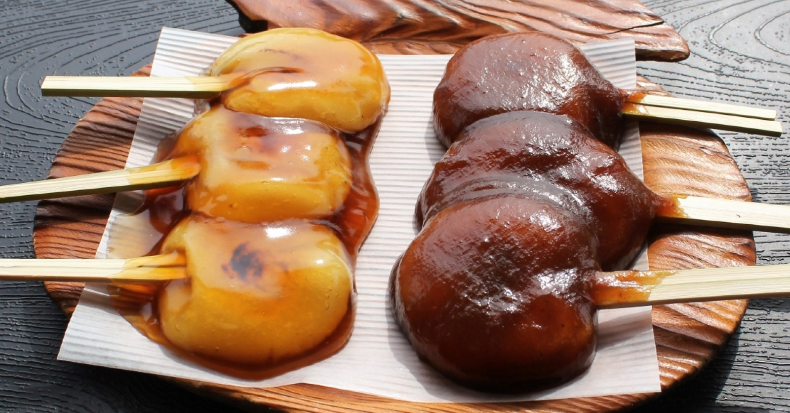
甘辛いタレが香る鹿児島名物。食べ歩きにも人気です。
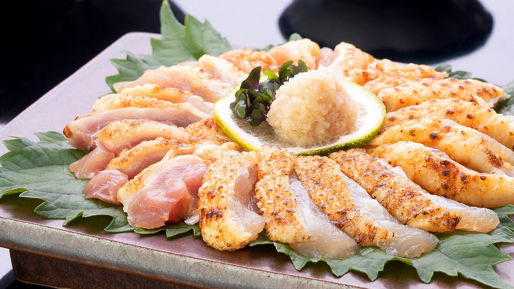
鹿児島ならではの食文化。新鮮な鶏肉を生や炙りで味わいます。
4月中旬〜下旬は、霧島の木々が鮮やかになり、桜島と錦江湾の景色も楽しみやすい時期です。霧島と海沿いでは体感温度が異なるため、調整しやすい服装で巡ります。
レンタカーを活かし、鹿児島らしい景色と食をしっかり盛り込んだ流れです。
鹿児島空港から霧島神宮へ。参拝後は鹿児島市へ向かい、黒豚料理と桜島の夕景を楽しみます。
桜島フェリーで海上から火山を眺め、大隅半島へ。雄川の滝を訪れた後、指宿方面へ移動します。
知林ヶ島の景色を楽しみ、鹿児島市へ戻ってラーメンと白熊を味わってから空港へ向かいます。
霧島、鹿児島市、大隅半島、指宿と広く巡るため、移動時間を見ながら休憩を挟む構成です。雄川の滝や知林ヶ島は当日の状況に応じて滞在時間を調整します。